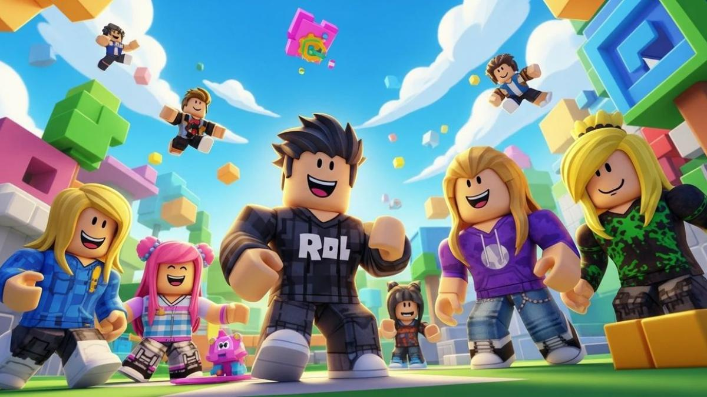

Apa itu Roblox?
Roblox adalah platform yang menyediakan berbagai pengalaman interaktif buatan kreator. Pengalaman di dalamnya memiliki tujuan dan cara bermain yang berbeda-beda.

Mulai dari genre yang sesuai
Kalau baru mengenal Roblox, beberapa genre berikut bisa menjadi titik awal:
- Obby: melewati rintangan dan mencapai garis akhir.
- Simulator: mengumpulkan sumber daya atau meningkatkan kemampuan.
- Roleplay: memainkan peran dalam lingkungan virtual.
- Survival: bertahan hidup dengan mengelola sumber daya dan menghadapi tantangan.
Baca penjelasan genre untuk melihat perbandingannya, atau buka formulir genre favorit untuk memilih genre yang paling menarik.